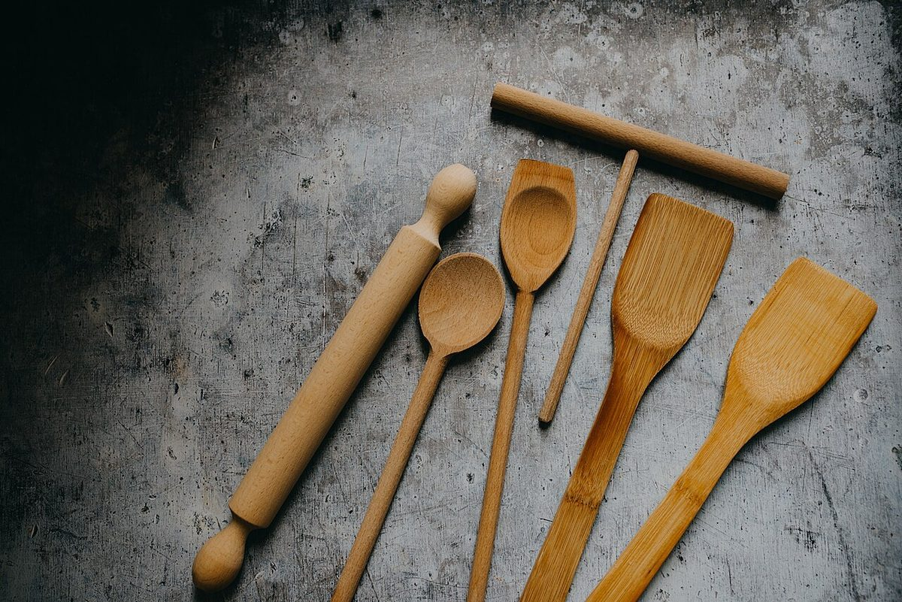

ステップ2
かける
分かっていることを、ひとつずつ並べます。
このページの「想像してみる」部分は、制作側が想像して書いたものです。お店の実際の様子・考え・商品とは関係がありません。
確認できていること
- 店名は「ブーランジェリー パルタージュ」、業種はパン屋
- 所在地は千葉県市原市山口488-1(〒290-0558)
- 電話番号はなし。連絡はInstagramから
- 営業時間・定休日・メニュー・価格・ご予約・駐車場は準備中
想像してみる(制作側の創作)
もしInstagramに粉や生地、道具の写真が並んでいたら、どんなふうに眺めるだろう。そんなことを想像しながら、材料と道具の写真を選びました。お店が何を作っているか、どんな道具を使っているかは分かっていません。
分かっていないことは書かない。それがこのサイトの決まりごとです。
かけ算の段
道具と材料の質感(イメージ)
写真はお店のものではなく、国外・撮影地不明のフリー素材です。


